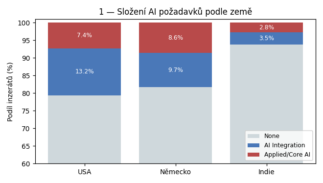
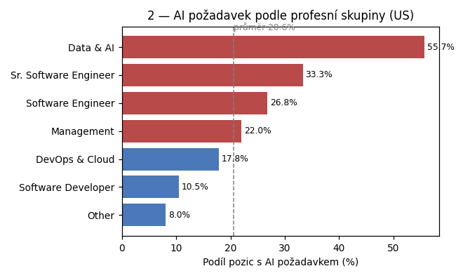
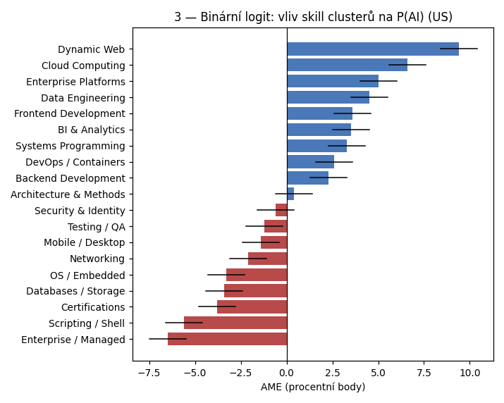
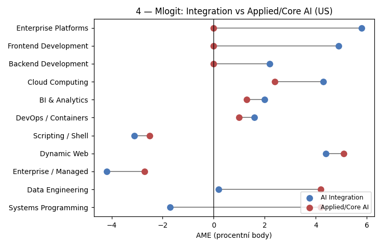
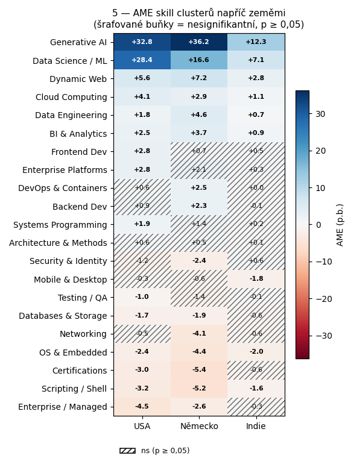
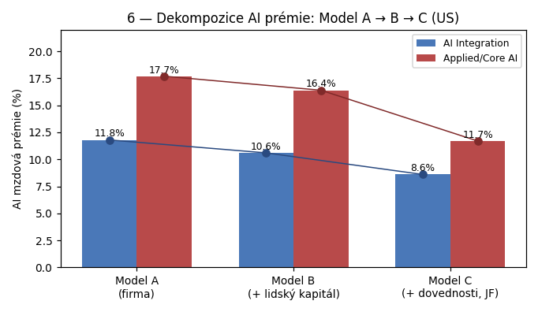
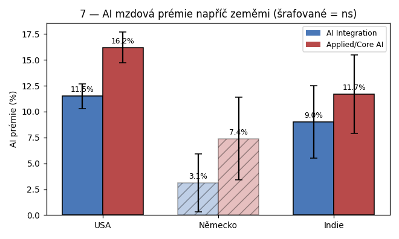

Čísla jsou přibližná / odhadnutá z textu. Finální verze ze Staty bude s přesnými hodnotami a CI.
USA a DE mají podobný celkový podíl AI, ale DE má relativně víc Applied/Core AI. Indie výrazně níž.

Koncentrace v Data & AI (55,7 %) je extrémně viditelná; šedá čára = průměr 20,6 %.

„Technologická propast" na jeden pohled: modré moderní cloud/web stack, červené legacy / enterprise.

Data Engineering a Systems Programming mají body na opačných stranách → čistí diskriminátoři. Frontend / Enterprise Platforms táhnou jen Integration.

GenAI a DS/ML dominantní všude, Frontend jen v US, Data Engineering silnější v DE, Enterprise/Managed negativní hlavně v US.

Applied/Core AI padá prudčeji než Integration → víc absorbuje tech profil pozice.

USA × IN podobné, DE šrafované jako statisticky nesignifikantní kvůli malému N = 514.
